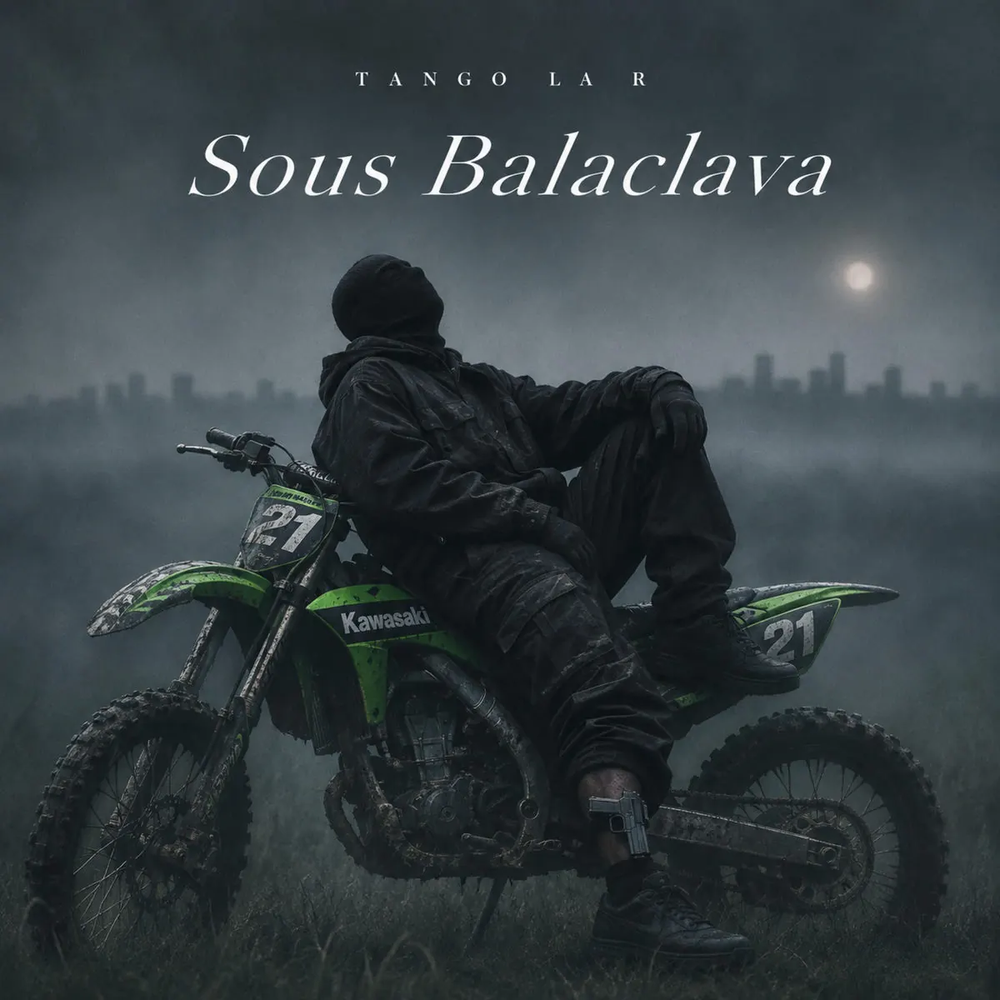

Publié le 4 novembre 2026

Le rappeur Tango La R publie son single Sous Balaclava le 4 novembre 2026. Morceau condensé de deux minutes, ce titre marque un resserrement net de sa structure habituelle.
Cette sortie s'inscrit dans une dynamique constante de la scène underground. L'artiste choisit d'éliminer les introductions pour entrer directement dans la grille de batterie.
Sur ses précédents singles comme Fourgon Noir ou Minuit passée, l'artiste proposait des durées situées entre trois et quatre minutes. Avec ce nouveau titre, il réduit l'habillage sonore pour concentrer son écriture sur un bloc unique et incisif.
Pourquoi Tango La R réduit-il la durée de ses morceaux ?
Tango La R réduit la durée de ses morceaux pour répondre aux nouvelles habitudes d'écoute sur les plateformes de streaming. Les auditeurs de la scène street privilégient aujourd'hui les titres incisifs qui s'enchaînent rapidement dans les playlists.
En supprimant le refrain traditionnel, le rappeur évite tout temps mort dans la piste. Le découpage repose uniquement sur des couplets denses posés sur un tempo rapide. Cette technique limite la lassitude et pousse l'auditeur à relancer le morceau dès la fin de la lecture.
Cette stratégie présente toutefois une limite artistique. Le format condensé laisse peu d'espace au développement des thèmes ou à des variations d'ambiance. Le morceau gagne en efficacité immédiate ce qu'il perd en profondeur narrative.
Quel est l'impact des formats courts dans le rap indépendant ?
Les formats courts permettent aux artistes indépendants de multiplier les sorties sans alourdir le processus de production. Un single de deux minutes exige moins de temps de studio et s'adapte parfaitement au rythme imposé par les réseaux sociaux.
Dans la mouvance underground mise en avant dans notre sélection des nouveaux rappeurs à suivre, ce choix technique devient un standard. Les morceaux denses d'environ deux minutes obtiennent un meilleur taux de rétention complet sur les plateformes de diffusion.
Pour Tango La R, cette formule resserrée constitue un exercice de style convaincant. Si l'efficacité du titre est indiscutable, un projet plus long nécessitera d'alterner avec des morceaux plus développés pour conserver du relief dans l'écoute.
| Morceau | Durée | Particularité de structure |
|---|---|---|
| Fourgon Noir | 4 min 31 s | Intro développée et refrains répétés |
| Minuit passée | 3 min 25 s | Format traditionnel à deux couplets |
| Sous Balaclava | 2 min 00 s | Bloc condensé sans intro ni refrain |
Ce choix stratégique permet d'ancrer le titre dans la dynamique actuelle du rap indépendant. Nous pouvons comparer cette démarche aux artistes du rap underground du 19e arrondissement qui privilégient aussi les formats bruts.
Sources